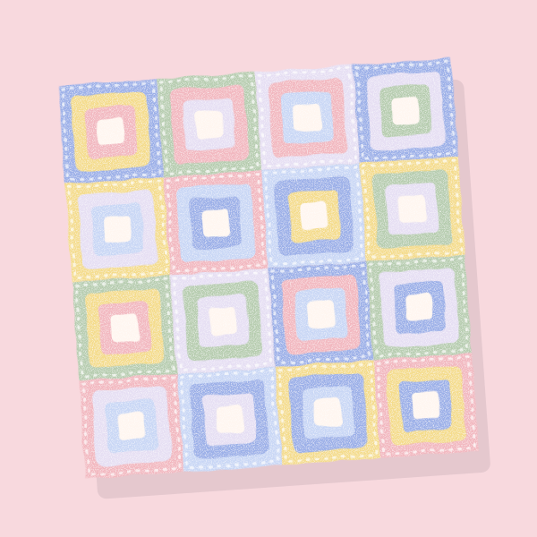
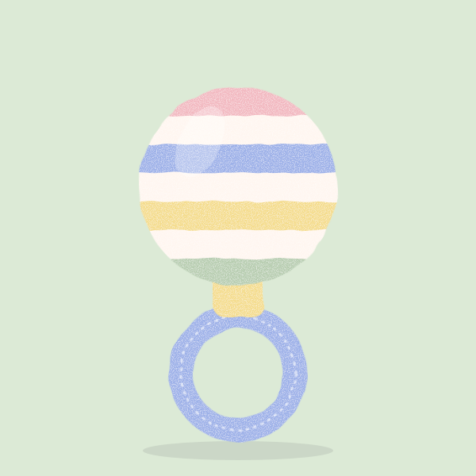
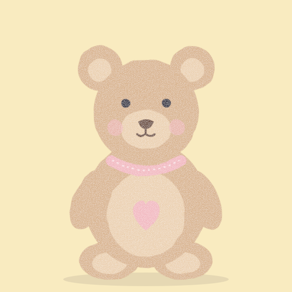
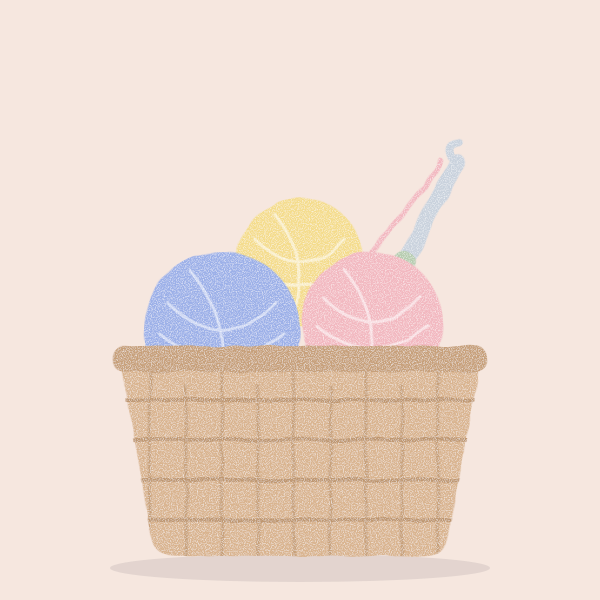

It began with one small blanket.
A few chapters on how Aysha Crafts came to be, told one stitch at a time.
-

The first blanket
Aysha crocheted her first baby blanket for a newborn in the family, working in the quiet hour after the house settled for the night. It was uneven, a little too big, and the baby would not be parted from it.
That was enough to keep her going.
-

Soft enough for a cheek
Babies explore with their hands and mouths, so Aysha started choosing yarn by touch before colour. If a yarn felt even slightly scratchy against her own cheek, it never made it onto the hook.
Smooth cotton and gentle blends became the heart of every piece.
-

Nothing that can come loose
Plastic eyes, buttons and beads are left out. Faces are embroidered, details are stitched in, and the stuffing sits inside firm, tight stitches that small fingers cannot pull apart.
A toy should be safe to love hard.
-

Made slowly, passed along
Friends began asking for blankets, then bunnies, then tiny booties. Today the work is still done in small batches at one table, so each piece can be finished with the same care as the first.
Aysha Crafts is a place to see that work, not a shop.